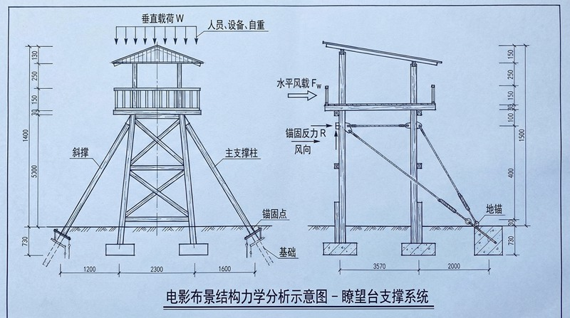
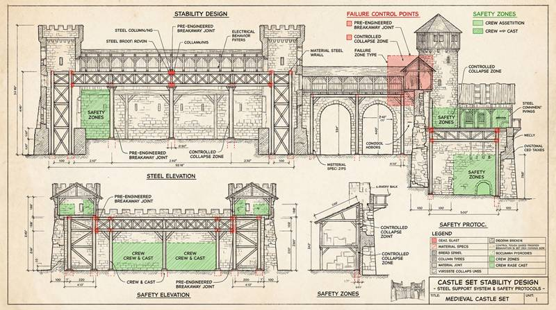

返回课程列表
第二课
静力学基础
灾难片中的结构力学与受力分析
⏱️ 约45分钟
建筑坍塌、桥梁断裂、大坝溃决——灾难片中最震撼的场景都涉及结构力学。理解受力分析，就能看懂这些特效背后的科学。
建筑结构的力学分析
建筑物承受重力、风力、地震力等多种载荷。结构设计的核心是确保所有构件的内力不超过材料强度。灾难片中的坍塌就是这种平衡被打破的结果。

灾难片中的结构破坏
经典灾难场景的力学分析：
- 《2012》地裂：地壳板块运动产生的剪切力撕裂地面，建筑失去地基支撑
- 《摩天营救》：高层建筑火灾导致钢结构软化，承载力下降引发局部坍塌
- 《不可能的任务》：悬挂在绳索上的受力分析，绳索张力=体重/cos(角度)
- 《碟中谍》：攀爬悬崖时手指摩擦力必须大于体重分量
桥梁与悬索结构
桥梁是力学的经典应用。拱桥利用压力传递，悬索桥利用张力承载，桁架桥利用三角形稳定性。电影中的桥梁断裂场景往往从最薄弱环节开始。

电影中的桥梁力学
桥梁场景的力学原理：
- 悬索桥断裂：主缆断裂后桥面失去支撑，像多米诺骨牌般连锁坍塌
- 独木桥过河：人走到桥中间时弯矩最大，最容易断裂
- 绳桥摇晃：风力或人的步行频率接近桥的固有频率时产生共振
- 玻璃桥碎裂：钢化玻璃破碎后仍有残余承载力，不会立即全部坠落